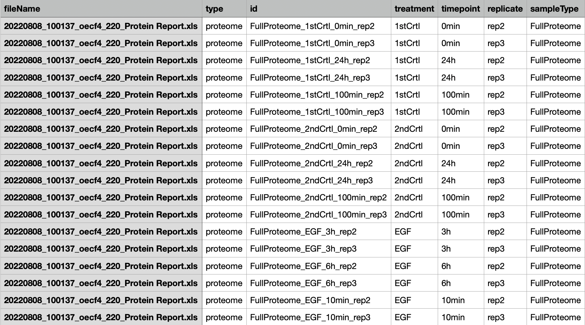
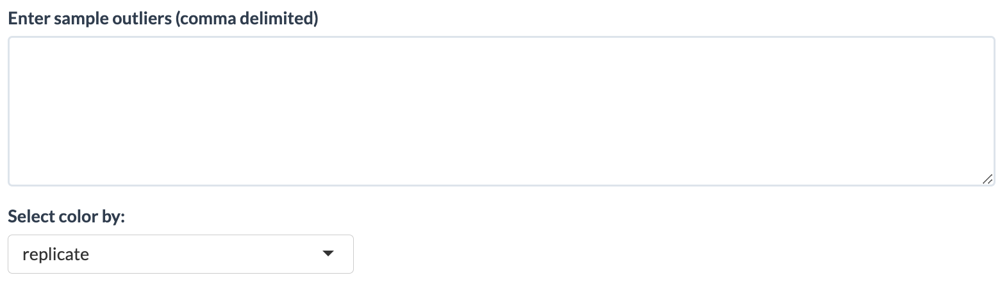
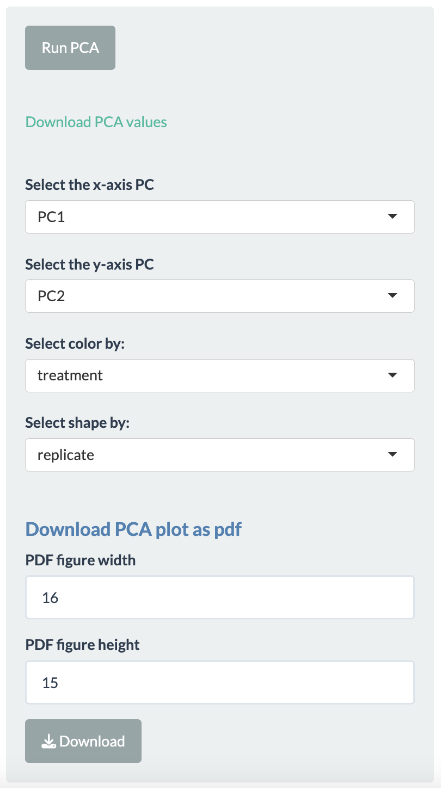
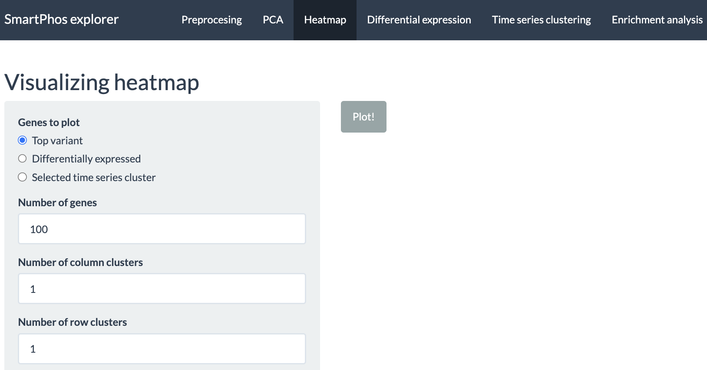
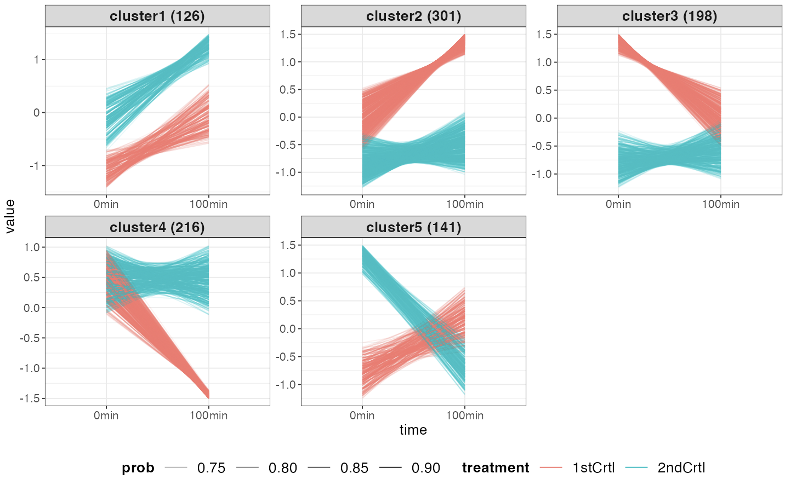
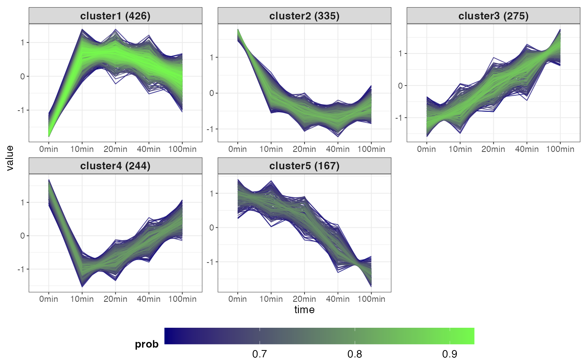
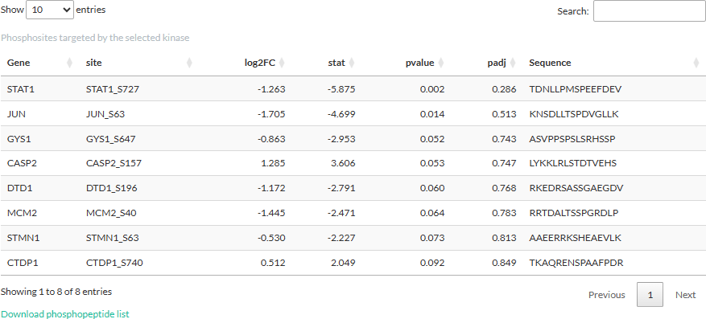
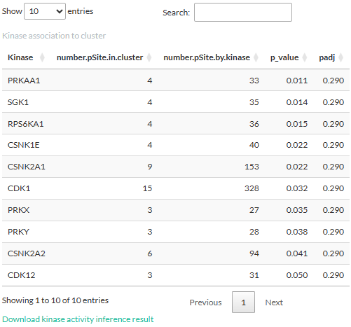
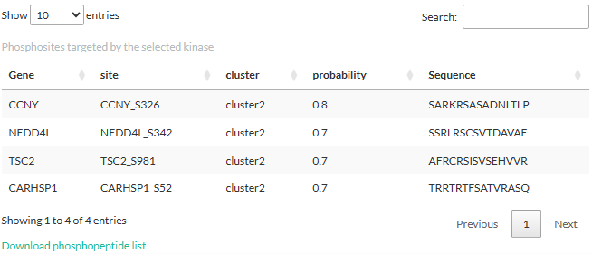

SmartPhos Explorer: a one-stop data analysis platform for proteomic and phosphoproteomic data
Shubham Agrawal, Cong Quan Ta, Junyan Lu
2025-03-21
Source:vignettes/SmartPhos_Shiny.Rmd
SmartPhos_Shiny.RmdIntroduction
SmartPhos Explorer is an R Shiny app for streamlined analysis of proteomics and phosphoproteomics, featuring data pre-processing, exploratory data analysis, hypothesis testing, time-series analysis and functional interpretation. There are two ways to run the SmartPhos Explorer shiny app:
- Calling the function after loading the SmartPhos package.
- Users can make an independent directory for the SmartPhos Explorer app and open any of the script (server.R, ui.R) in RStudio and click on Run App button.
library("SmartPhos")
makeSmartPhosDirectory(path = "shinyApp")The front page of the Shiny app looks as below:

The current tabs are:
- Preprocessing
- PCA
- Heatmap
- Differential expression
- Time-series clustering
- Enrichment analysis
- Kinase activity inference
- Log Info
- Update Notes
In this vignette, we will walk you through the process of preparing your data and performing downstream analyses using different tabs in the Shiny app.
Preprocessing tab
This tab contains the functions for preprocessing before diving into data analysis and interpretation. In this tab, users can start with uploading a MultiAssayExperiment object, generated by the SmartPhos R package or a zip file containing quantification tables from Spectronaut or MaxQuant. Output from DIA-NN is planned for the future update. After uploading the data, options for choosing the transformation and normalization methods, performing batch effect correction, and displaying the missing values are available. There is also an option for saving the uploaded data as R object (.rds file) for reusing in the future to save processing time.
Upload options
Uploading is one of the most important steps in the smooth functioning of the app.
As shown in the figure, users have the option to decide between uploading a zip file and a MultiAssayExperiment object. The zip file contains the output files generated by Spectronaut or MaxQuant software. For users who are not experienced with R, this is the preferred option.
When using the zip file option, there are certain requirements the users need to follow for the error-free conversion of the data from these files into a multiAssayExperiment R object. One of the most important requirements for the zip file is to contain a properly formatted fileTable.txt file. The details of this file are explained in the next subsection.
fileTable.txt file
This file should be a tab-separated tsv file that
contains the information including name of the quantification table,
sample ID and experimental details, such as whether a certain sample was
enriched for phospho-peptides, whether the quantification was on protein
groups or phosphorylation sites and so on.
Optional annotations, such experimental conditions, time points and etc.
can also be included in this table and some of them are required for
specific downstream analysis tasks. An error message will be displayed
if this file is missing or the format of file is incorrect. The
mandatory columns in this table are as follows:
fileName: The names of quantification tables of protein groups or phosphorylation sites. They should be the standard output files from Spectronaut or MaxQuant. Make sure that it contains only the file names with the file extension (For example: “20240826_Protein_Report.xls”, “20240826_PTMReport.xls”)) and not the relative or absolute path.
Important notes on the format of the quantification table from Spectronaut: The quantification table from Spectronaut should be in the “wide” format, with different samples in different columns. The table should be in plain text format, not Excel tables. The file extension does not matter. Spectronaut sometimes output .xls files but they are actually plain text files. The acceptable deliminators for the tables are: tab ( (preferred), comma (,), colon (:) and semicolon (;). For full proteome measurement, “PG.ProteinGroups”, “PG.Genes” and “[sample name]PG.Quantity” columns must be present. For phosphoproteome measurement, “[sample name]PTM.SiteProbability”, “[sample name]PTM.Quantity”, “PTM.CollapseKey”, “PG.UniProtIds”,“PG.Genes”, “PTM.SiteLocation”, “PTM.SiteAA”, and “PTM.FlankingRegion” columns must be present.
id: Contains unique identifiers for sample (sample IDs). The sample IDs should correspond to the prefix of actual column names in the quantification table. For example: the ID value FullProteome_1stCrtl_0min_rep2 corresponds to one of the column names oecf4_220602_BH_ET_FullProteome_1stCrtl_0min_rep2.raw.PG.Quantity in the quantification table. SmartPhos will automatically recognize the columns in the quantification table that match a certain sample ID, as long as this sample ID is present in the columns that contain “PG.Quantity”.
searchType: Contains information on the type of search performed on the samples by Spectronaut or MaxQuant. There are two possibilities: proteome (quantification of protein abundance) and phosphoproteome (quantification of the abundance of phosphorylation sites). The two searchTypes are represented as two assays in the multiAssayExperiment object. Note that the app will still work if only one of the searchType is present but some functions may not be available. For example, normalisation of phosphorylation sites by protein abundance will be not available of only phosphoproteome measurement is available.
sampleType: Contains information of whether enrichment for phosphorylated peptides is performed for a certain sample. The sampleType can be Phospho (or PP) for the phospho-enriched samples and FullProteome (or FP) for the non-enriched sample. Not that the app will still work if only one of the sample type is present but some functions may not be available. For example, the novel normalisation correction for phosphoproteomic data will not be available if full proteome without enrichment is absent.
The above mentioned columns are mandatory ones. Other than that, fileTable.txt can contain optional columns such as:
sampleName column is important for performing normalization correction or for normalizing Phosphoproteome samples by Full Proteome samples. This should be the sample id without FP_/PP_ or Phospho_/FullProteome_ suffix or prefix. For example, for the sample ID, FullProteome_1stCrtl_0min_rep1, the sampleName should be, “1stCrtl_0min_rep1”. Without this column, it would not be possible to perform normalization correction and normalizing phosphoproteome samples by full proteome samples.
subjectID with information like patientID, cell lines, etc. This column will be used if there are multiple samples from the same subject and users wish to include the subject ID as covariates in hypothesis testing (e.g. paired t-test) or time-series analysis.
timepoint with values like 0min, 20min, 6h, 24h, etc. This column is important for the time-series clustering tab and other tabs which make use of the results from the time-series clustering tab.
replicate with values rep1, rep2, replicate1 and so on.
treatment containing information about different treatments or experimental conditions.
Users can include any metadata for visualization or hypothesis testing in the fileTable.txt.
Here is an example of the fileTable.txt file:

NOTE: It’s better to avoid any special characters (‘(’, ‘)’, ‘#’, ‘%’, ‘@’, etc) in the column names in the quantification table output by Spectronaut/MaxQuant and same for the ID column of the fileTable.txt file. In addition, sample IDs should not start with numbers. Those can cause error in parsing the data.
Column annotations
Users have option to select the column annotations, which are provided by users in the fileTable.txt, when using the zip file method. If the upload of zip file is successful, another widget will appear which will allow the user to select from the different available annotation options. Multiple selections are possible simply by clicking on the list item.

MultiAssayExperiment object
For users with experience in R, they can parse data by using our SmartPhos package, which will create an multiAssayExperiment object. Users can save this object as an rds file and choose the “MultiAssayExperiment object” option for uploading the data.
Users can also first upload the zip file to SmartPhos Explorer and download the processed data as an rds file (see section 2.1.5) . This file can be uploaded using the “MultiAssayExperiment option** option in the future analysis, which will save some time as processing the quantification table can be slow if the file size is large.
Error checks
If the processing of zip files or multiAssayExperiment object is successful, then the upload tab will show the total number of samples and features.

The user will have option to choose the assay and sample type as shown in the figure above. In case the upload is not successful, the app will display an error message. These error messages are:


Preprocessing options
SmartPhos package performs some pre-filtering and preprocessing based on various threshold values during the generation of the multiAssayExperiment object. On top of that, this panel has different options for preprocessing of the selected assay. The options provided by the shiny app are as follows:
- Normalization correction: This option is present only if the phophoproteomics data is present. It allows for the correction of normalization artefacts introduced by the Spectronaut.
- Normalize phospho intensity by the corresponding protein expression.
- Transformation: The transformation methods available are: log2 and vst (variance stabilizing transformation).
- Normalization: Normalization strategy depends on the selected transformation method. Therefore, the user has option of Yes or No. If the user selects Yes, then for log2 and no transformation, median scaling is applied and for vst, vsn is applied.
- Missing values: Users can select what percentage of missing values are allowed. Proteins with missing values above the selected threshold will be removed from all analyses.
-
Imputation: Currently four imputation methods are
available:
- QRILC (Quantile Regression Imputation of Left-Censored data)
- MinDet (Deterministic minimal value approach)
- BPCA (Bayesian PCA)
- MLE (Maximum Likelihood Estimation)
- Random forest
- Batch effects removal: This option provides the abilty to correct for batch effects. It uses removeBatchEffect() from the limma package. The users can select the maximum of two columns. The columns used for batch effects removal should be present in the fileTable.txt file.
After selecting the options, press the Process button to perform the preprocessing.
Other options
The preprocessing tab has some more options:
- Plot the completeness of the assay. It will plot a bar plot displaying percentage of completeness for each sample.
- Launching MatrixQCvis. Another shiny app for exploratory analysis.
- Saving, loading and removing results. The multiAssayExperiment object can be saved, loaded and removed within the shiny app.
- Removing outlier. Simply writing the names of the samples (delimited by comma) in the text box will remove those samples. It also supports regex option. For example: if “100min” is typed in the outlier box, then all the samples with 100min timepoint will be removed.
- Coloring the box plot based on different annotations is also possible.
- Subsetting of the dataset is possible from the displayed table. The selected annotations in the filter options of different columns will be used for subsetting the data. The following tabs of the shinyApp will use that subsetted data for further exploration and analysis. Subsetting can be undone by simply removing the annotations from filter boxes.
- After preprocessing, the assay is saved as a SummarizedExperiment object and user can download it as a rds file.


Output
The different outputs available to the users are:
- A box plot of intensity values for each samples.
- A diagnostic plot of phopho to fullProteome ratio. This plot can be used to decide if the normalization correction should be performed or not. It can also shows the outliers.
- A data table showing the information about each samples.
- A bar plot which shows the percentage of completness of each samples.
PCA
This tab performs principal component analysis (PCA) on the imputed assay from the Preprocessing tab and then plot the principal components.

Simply click on Run PCA button to perform PCA. The different options available to the users after plotting are:

- Selecting the principal components for x- and y-axis.
- Two more dimensions can be added to the data points using color and shape options.
- The plotting is done using Plotly package, so users have many functionalities. For example, hovering over the plotted data points will display more information, downloading plot as png file, etc.
- PCA values can be downloaded as a tsv file.
- PCA plot can also be downloaded as a pdf file.

NOTE: If imputation is selected none in the preprocessing tab, then performing PCA is not possible. An error message will pop-up on screen.
Heatmap
This tabs allow the user to plot the heatmap of the imputed assay from the preprocessing tab. Users can select from the three choices available:

- Top variant: This allows the users to plot the genes with highest variance. Users can decide the number of top variants genes to plot. This option performs clustering automatically. The user also has the option to divide the columns and rows of the heatmap into specific number of clusters.
- Differentially expressed: Allows to plot the heatmaps for differentially expressed genes. The differential expression analysis is available in Differential expression tab and can be performed using ProDA or Limma.
- Selected time series cluster: After performing the time-series clustering in another tab, users have option to plot the heatmap of the selected cluster.
For all the above-mentioned options, users can add additional column annotations to the plotted heatmap. Adding more column annotations to the heatmap can be helpful to understand the heatmap better and see the patterns in the data more clearly. User can also download the heatmap as a PDF.

The tab also has error checks. If the user tries to plot the heatmap of differentially expressed genes or the genes from the selected time series cluster prior to performing the aforementioned analysis, an error message will be displayed.
Differential expression
This tab performs differential expression analysis on the transformed and normalized assay from the first tab. The goal of performing differential expression analysis is to quantify the expression levels of genes between different experimental conditions using statistical tests.
If the users want paired t-test on the patient IDs, cell lines, etc, then the users must have subjectID as one of the column in the fileTable.txt file with the relevant information. The subjectID column should also be selected in the additional column annotations before the generation of multiAssayExperiment object.
The two methods available for performing differential expression analysis are:
- limma: uses linear models.
- ProDA: uses probabilistic dropout model.
To use this tab, first the user has to select the metadata column for which they want to perform the analysis. Users need to select samples for the reference and target group, between which the differential expression analysis will be performed. This can be done by either selecting treatments or selecting sample IDs. In the former, time points should also be specified if the column timepoint is present in the fileTable.txt file. Multiple treatments and time points can be selected for each group. As the selection is updated for each group, the user interface informs users of the number of samples in each group as well as a warning if a sample is present in both group. The latter option allows users to directly choose which sample to include in each group, thereby allowing more flexibility in sample selection. The two figures below show examples of the user interface when using either option. Notice that a warning was given in the latter since one sample was present in both groups.

The output of differential expression analysis is a table which contains the differentially expressed genes arranged by the lowest p-values. The other information present in the table are: Uniprot ID, log2 fold change, t-statistic, adjusted p-value and some information if the data is phosphoproteomic data. A volcano plot is also plotted, highlighing the points with positive and negative log fold-change and above certain p value. The histogram of p-value is also plotted.

Users have options to filter the differentially expressed genes table based on p-value and log fold change value. There is also an option of using adjusted p-value instead.

If the user click on the row of the differential expression table, the corresponding point in the volcano plot is highlighted as star. Moreover, a box plot is plot to show the change in normalized intensities for the selected conditions. Also, if the user click on any coloured point in the volcano plot, the corresponding row in the differential expression table is highlighted. The user also has the option to download the differential expression table as a TSV file.

In case the differential expression analysis is not possible for the selected settings, an error message will appear.
Time series clustering
This tab performs fuzzy c-means clustering to group proteins/phosphopeptides based on how their level changes over time. The algorithm considers the time-resolved trend, but not the expression levels. Thus, members of the same cluster would have a similar trend over time (e.g., all increasing or all decreasing), though their expression level can be different.
To use this tab, users must specify the timepoint column in the fileTable.txt file when preparing the data. The time points are either unit-less numbers (e.g., 1, 2, 3) or are in hour and/or minute, which must be typed as “h” and “min”, respectively (e.g., 1min, 2min, 3h). Please notice that mixing the two said options (e.g., 1, 2min, 3) or using other unit for time (e.g., 1hour, 2minute, 3day) will likely lead to wrong results.
The options for using this tab are as follow:

Users first need to choose the metadata column of interest for the analysis. Based on the selected metadata, user will be provided with the different conditions to choose from. Additionally, if the clustering is performed on either “logFC” or “two-condition expression”, a reference condition should also be chosen. The options to perform clustering on determine what it means for genes to be in the same cluster:
- expression: Genes in the same cluster have the similar trend in their expression level.
- logFC: Genes in the same cluster have the similar trend in their fold-change, (logFC). The fold-change is the difference in expression level between the two selected treatments.
- two-condition expression: Genes in the same cluster have the similar trend in their expression level and between the two treatments.
Users can choose to include or exclude certain time points by checking the boxes. The time points are updated when selecting the treatments.
Other parameters for the analysis
- Use top % variant genes along time
- Filter genes based on spline fit test: If selected, a spline fitting would be used to filter out genes whose changes are inconsistent. subjectID is used to pair samples if provided, otherwise the replicates are considered independent.
- Number of clusters: We advise users to try the analysis with multiple values to select the best number of clusters.
- Cut-off for cluster membership probability: Genes are removed from a cluster if their probability to be in that cluster is below this cut-off value.
Output
The plot shows the time-course trend of genes in the clusters. If either expression or logFC was chosen, the color would indicate the genes’ membership probability:
If two-condition expression was chosen, the color is used to distinguish the treatments: 
Accompanying the plot is a table show the details of the genes in each cluster. User can select the cluster to view with the drop-down menu on the upper left side of the table. The table can be downloaded as a tsv file. The selected cluster will be used as input for enrichment analysis and kinase activity inference.
Clicking on a gene will show a plot of its time-course expression level and a line showing the average expression level:
In case zero timepoint is not available for a selected treatment, user has the option to add zero timepoint to the treatment from one of the controls (or conditions with zero timepoint). This will be reflected in the plots showing the clustering results and also when a particular gene is selected for seeing the normalized expression level.

If no cluster was found, for instance due to cut-off values being too high, users will be informed with a pop-up window:
Enrichment analysis
This tab performs enrichment analysis on genes or phosphosites that are differentially expressed or in a time series cluster. To use this tab, users would first need to perform either a differential expression analysis or time-series clustering. Users have three options to choose the source of gene list:
- Differential expression: the gene list of the differential analysis result.
- Select time-series cluster: the selected cluster after performing the time-series clustering.
- All time-series cluster: on all the clusters resulted after performing the time-series clustering.
We offer the possibilities to perform enrichment analysis on either gene sets (gene-centric) or post-translational modification signature sets (site-centric). In the latter, each set contains PTM site names with direction of regulation (up- or down-regulated) instead of gene names. Only phosphorylation sites will be considered since this pipeline supports proteomic and phosphoproteomic data. The gene sets and PTM signature sets are derived from the Molecular Signatures Database (Subramanian, Tamayo et al.,2005; Liberzon et al., 2011, Liberzon et al., 2015) and the PTM Signature Database version 2.0.0 (Krug et al., 2019), respectively. Users are encouraged to consult the PTMsigDB website (https://proteomics.broadapps.org/ptmsigdb/) and the paper of Krug et al. for details on how PTM signature sets were curated and their annotation.
In gene-centric pathway enrichment, users can perform either Parametric Analysis of Gene Set Enrichment (PAGE) (Kim & Volsky, 2005) or Gene Set Enrichment Analysis (GSEA) (Subramanian, Tamayo et al.,2005) with Differential Expression analysis result. With Time series clustering result, we offer the Fisher’s exact test. For phospho-signature enrichment on Differential Expression analysis result, we offer PTM-Signature Enrichment Analysis (PTM-SEA), a method adapted from GSEA by Krug et al. (2019) to be applicable with the PTM Signature Database. On time series clustering result, we offer the Fisher’s exact test, in which each signature set is split into two, one containing upregulated and the other downregulated phosphosites.
Options for performing enrichment analysis are shown below:
- Select analysis method: Whether to perform gene-centric pathway enrichment or site-centric phospho-signature enrichment. If the Proteome assay is selected in the preprocessing tab, only the former is available.
- Source of gene list: Whether to use result from differential expression analysis, selected time-series cluster or all time-series cluster
- Select enrichment method: Which method should be used for the analysis. In pathway enrichment, the method is either “PAGE” (Parametric Analysis of Gene Set Enrichment) or “GSEA” (Gene Set Enrichment Analysis) for differential expression result and only Fisher’s exact test for time-series clustering. If “GSEA” is chosen, the number of permutations to generate the null distribution should also be specified (default 100). In phospho-signature enrichment, the method is PTM-SEA (not shown on UI) for differential expression and Fisher’s exact test for time series clustering.
- Statistic used for ranking: Whether to use t-statistics or log2FC for the analysis, only applies to differential expression result.
- Select geneset database: User here has option either to select from available gene set/ PTM set database listed in the box or upload another gene set/ PTM set.
- P-value cut-off and option to use FDR.
Output
If either differential expression analysis or time-series clustering has not been performed (depending on the selected Source of gene list), users would be informed of the error:
Otherwise, the result is shown in a table indicating the genesets’ names, number of genes in set, enrichment score (PAGE, GSEA, and PTM-SEA), and p-values. In PTM-SEA, each reported enrichment score is normalized by the mean of the null distribution’s enrichment score to control for differences in signature set size. Example results are shown in the figures below, along with explanation for each column.
(Pathway enrichment for Differential Expression analysis)

- Name: Name of the gene set
- Gene Number: Number of genes in the gene set that are also present in the result from Differential Expression analysis.
- Stat: Enrichment score.
- p.up, p.up.adj, p.down, p.down.adj: (adjusted) p-values estimated by the enrichment analysis.
- Number up: Number of genes with logFC > 0
- Number down: Number of genes with logFC < 0
(Pathway enrichment for Time series clustering)

- Gene.number: Number of genes in the gene set that are also present in the selected cluster.
- Set.size: Number of genes in the gene set in the selected database.
- pval, padj: p-values estimated by the Fisher’s exact test.
(Phospho-signature enrichment for Differential Expression analysis)

- Name: Name of the PTM signature set. Users should consult the PTMsigDB website (https://proteomics.broadapps.org/ptmsigdb/) for more descriptions of the names of these sets.
- Site.number: Number of phosphosites in the signature set that are also in the result from Differential Expression analysis.
- Number.up: Number of phosphosites with logFC > 0 and are registered as up-regulated in the signature set.
-
Number.down: Number of phosphosites with logFC <
0 and are
registered as down-regulated in the signature set. - Number.pSite.Db: Number of phosphosites belong to the signature set in the selected database.
- Number.PTM.site.Db: Number of PTM sites belong to the signature set in the selected database.
- pvalue, padj: p-value estimated by PTM-SEA.
(Phospho-signature enrichment for Time series clustering)

- Name: the appendix “_upregulated” or “_downregulated” indicates whether the phosphosites in the set are upregulated or downregulated according to the database.
- Set.size: Number of phosphosites belong to the signature set in the selected database.
Clicking on a set will open a table showing the details of
genes/phosphopeptides in the set. We would like to notice that for
pathway enrichment, a gene with more than one detected phosphosite would
appear in several rows of this table, each corresponding to a
phosphosite. Nevertheless, the analysis would only consider each gene
once regardless of its number of phosphosite, thereby limiting the bias
towards genes with several sites. For phospho-signature enrichment, the
table has an additional column “PubMedID” (not shown in the figure
below), which contains the PubMed identification or hyperlink of the
source of the interaction. Multiple sources for a phosphosite are
separated by semicolons.

Clicking on a gene/phosphosite in this table will highlight the sets
containing it: 
The tables above can be downloaded as tsv files. Clicking on a
gene/phosphosite will also show its expression level either as a boxplot
(differential expression analysis) or a scatterplot (time-series
clustering).

If the user has selected All time-series cluster, then a dot plot is generated. The dot plot displays all the enriched pathways for each cluster. Clicking on the points inside the dot plot will give the list of genes or phosphosites associated with the particular pathway and the cluster. Clicking on the row of the list will plot a expression level trend for the selected genes or phosphosites.
Kinase activity inference
This tab performs kinase activity inference based on phosphopeptides that are differentially expressed or in a cluster. Similar to enrichment analysis, users would first need to perform either a differential expression analysis or time-series clustering and select a cluster of interest. By combining prior knowledge about known kinase-phosphosite interactions and the data, the tab can infer the activity of the kinases responsible for the phosphopeptides being considered. The activity is estimated by an activity score computed with the package decoupleR (Badia-I-Mompel et al., 2022) following the authors’ tutorial on Kinase and Transcription Factor activity estimation. For time-series clustering, users can also estimate how likely the kinases are associated with phosphopeptides in the selected cluster.
A network of kinase-phosphosite interactions is constructed using the package OmnipathR (Türei et al., 2021). Users can choose to construct this network with prior knowledge from either Homo sapiens (taxonomy ID = 9606) or Mus musculus (taxonomy ID = 10090) by choosing the organism in Select reference species.
Users need to first select whether to perform the inference on result from either differential expression analysis or time-series clustering. This selection affects what type of analysis can be done, as is shown in the next two subsections.
Differential expression
When selecting differential expression, the list of phosphopeptides
from the differential expression analysis are used for kinase activity
inference. The options to perform the inference from differential
expression analysis result are shown below:

- Statistic used for computing the kinase score: Whether to compute the kinase score based of the t-statistic or logFC from the differential expression analysis.
- Number of top kinases in plot: How many kinases in each direction to display in the plot.
- Number of permutations: How many permutations should be done for calculating the null distribution.
- Highlight kinases with p-values under: Kinases whose p-values are below this threshold will be highlighted.
- use FDR: Whether the FDR should be used.
The output is a table showing the kinases, the activity score, and (adjusted) p-values. Positive scores are highlighted pink while negative ones are highlighted blue. For kinases with the most positive or negative activity score (default 10), their scores are also plotted in a horizontal barplot. Kinases whose p-values under the threshold are colored red.
Interpreting the result: The kinase activity is computed from comparing two conditions, hence it is important to take into account the conditions when interpreting the result. A positive score means that the kinase is more active in the selected condition compared to the reference one, while a negative score means that the kinase is more active in the reference condition.
Selecting a kinase will open a table showing the phosphosites targeted by the kinase. The information shown in the table is from the differential expression analysis: log2FC, t-statistic, peptide sequence, and (adjusted) p-values. We would like to notice that these p-values are from the differential expression analysis and should not be confused with those derived from the kinase activity inference. 
Time-series clustering
When selecting time-series clustering, the list of phosphopeptides in the selected cluster (in the Time series clustering tab) is used to either infer the kinase activity score or how likely the kinases are associated with the cluster. These analyses will be explained in more details in the following 2 subsections.
Estimating kinase activity score
For this part, users would need to define the number of permutations
for calculating the null distribution.

Then the option to perform clustering specified in the Time
series clustering tab affects the analysis being done in this
part. If the option expression was chosen, the
fold-change in expression levels for consecutive time points would be
used for the inference. Thus, the result would reflect how the kinase
activity change over time. Below is an example of the result when
performing the inference with 4 time points:

- The table shows the kinases along with its activity score and (adjusted) p-values. The timepoint column shows which two time points were considered when estimating the score. Activity scores are labeled pink if they are positive and blue if negative.
- The kinase activity scores are plotted in a heatmap and those whose p-values below the threshold are highlighted by asterisk.
Clicking on a kinase will open a table showing the phosphosites targeted by the kinase:
If the logFC or two-condition
expression option was chosen for time-series clustering, the
fold-change in expression levels between the two treatments would be
used for the inference. Thus, the result would reflect how the kinase
activity differ between two treatments at each time point. The layout of
the result is similar to that of the above-mentioned
expression option:

If no kinase was found (wrong reference species or no overlap with
prior knowledge), users will be informed of the error:

Estimating kinase association
In addition to kinase activity, users can choose to determine whether
the kinases are associated with the selected cluster, using either the
Fisher’s exact test or the Fast Gene Set Enrichment Analysis algorithm
(FGSEA). In FGSEA, the probability of each site to be in the cluster is
used to rank the sites. Performing FGSEA is done by the decoupleR
package (Badia-I-Mompel et al., 2022) and requires users to set the
number of permutations for calculating the null distribution. Both
methods use the kinase-phosphosite interaction network as their
reference. Unlike the above part on estimating kinase activity, the
choice of method for time series clustering in the Time series
clustering tab does not affect the method in this part.

The result for the Fisher’s exact test is displayed in a table. Kinases whose (adjusted) p-values higher than the p-value threshold are excluded. 
- number.pSite.in.cluster: Number of phosphosites targeted by the kinase and are present in the cluster.
- number.pSite.by.kinase: Number of all phosphosites known to be targeted by the kinase, as derived from the above-mentioned kinase-phosphosite network.
- p-value: p-value from the test.
- padj: adjusted p-value (FDR).
The result for the FGSEA is also displayed in a table showing the
enrichment score.

Clicking a kinase will open a table showing the phosphosites targeted by the kinase in the cluster. 
Log Info
This tab displays the information about the user inputs. All the settings selected by the user are displayed in a table and can be downloaded as a TSV file. The table contains the following columns:
- name: name of the input (usually the widget ID used in the shiny app script).
- value: the value associated with the name. This is the actual user input.
- panel: the tab panel in the shiny app to which this value belongs.
- description: a short description about that particular setting.
Session Info
## R version 4.5.1 (2025-06-13)
## Platform: x86_64-pc-linux-gnu
## Running under: Ubuntu 24.04.2 LTS
##
## Matrix products: default
## BLAS: /usr/lib/x86_64-linux-gnu/openblas-pthread/libblas.so.3
## LAPACK: /usr/lib/x86_64-linux-gnu/openblas-pthread/libopenblasp-r0.3.26.so; LAPACK version 3.12.0
##
## locale:
## [1] LC_CTYPE=C.UTF-8 LC_NUMERIC=C LC_TIME=C.UTF-8
## [4] LC_COLLATE=C.UTF-8 LC_MONETARY=C.UTF-8 LC_MESSAGES=C.UTF-8
## [7] LC_PAPER=C.UTF-8 LC_NAME=C LC_ADDRESS=C
## [10] LC_TELEPHONE=C LC_MEASUREMENT=C.UTF-8 LC_IDENTIFICATION=C
##
## time zone: UTC
## tzcode source: system (glibc)
##
## attached base packages:
## [1] stats graphics grDevices utils datasets methods base
##
## other attached packages:
## [1] BiocStyle_2.36.0
##
## loaded via a namespace (and not attached):
## [1] digest_0.6.37 desc_1.4.3 R6_2.6.1
## [4] bookdown_0.43 fastmap_1.2.0 xfun_0.52
## [7] cachem_1.1.0 knitr_1.50 htmltools_0.5.8.1
## [10] png_0.1-8 rmarkdown_2.29 lifecycle_1.0.4
## [13] cli_3.6.5 sass_0.4.10 pkgdown_2.1.3
## [16] textshaping_1.0.1 jquerylib_0.1.4 systemfonts_1.2.3
## [19] compiler_4.5.1 tools_4.5.1 ragg_1.4.0
## [22] evaluate_1.0.4 bslib_0.9.0 yaml_2.3.10
## [25] BiocManager_1.30.26 jsonlite_2.0.0 rlang_1.1.6
## [28] fs_1.6.6 htmlwidgets_1.6.4References
Badia-I-Mompel, P., Santiago, J. V., Braunger, J., Geiß, C., Dimitrov, D., Müller‐Dott, S., Tauš, P., Dugourd, A., Holland, C. H., Flores, R. O. R., & Sáez-Rodríguez, J. (2022). decoupleR: ensemble of computational methods to infer biological activities from omics data. Bioinformatics Advances, 2(1). https://doi.org/10.1093/bioadv/vbac016
Kim, SY., Volsky, D.J. PAGE: Parametric Analysis of Gene Set Enrichment. BMC Bioinformatics 6, 144 (2005). https://doi.org/10.1186/1471-2105-6-144
Krug, K., Mertins, P., Zhang, B., Hornbeck, P., Raju, R., Ahmad, R., Szucs, M. J., Mundt, F., Forestier, D., Jané‐Valbuena, J., Keshishian, H., Gillette, M. A., Tamayo, P., Mesirov, J. P., Jaffe, J. D., Carr, S. A., & Mani, D. R. (2019). A curated resource for phosphosite-specific signature analysis. Molecular & Cellular Proteomics, 18(3), 576–593. https://doi.org/10.1074/mcp.tir118.000943
Liberzon, A., Birger, C., Thorvaldsdóttir, H., Ghandi, M., Mesirov, J. P., & Tamayo, P. (2015). The Molecular Signatures Database (MSigDB) hallmark gene set collection. Cell systems, 1(6), 417–425. https://doi.org/10.1016/j.cels.2015.12.004
Liberzon, A., Subramanian, A., Pinchback, R. M., Thorvaldsdóttir, H., Tamayo, P., & Mesirov, J. P. (2011). Molecular signatures database (MSigDB) 3.0. Bioinformatics, 27(12), 1739–1740. https://doi.org/10.1093/bioinformatics/btr260
Subramanian, A., Tamayo, P., Mootha, V. K., Mukherjee, S., Ebert, B. L., Gillette, M. A., Paulovich, A. G., Pomeroy, S. L., Golub, T. R., Lander, E. S., & Mesirov, J. P. (2005). Gene set enrichment analysis: A knowledge-based approach for interpreting genome-wide expression profiles. Proceedings of the National Academy of Sciences of the United States of America, 102(43), 15545–15550. https://doi.org/10.1073/pnas.0506580102
Türei, D., Valdeolivas, A., Gul, L., Palacio-Escat, N., Klein, M., Ivanova, O., Ölbei, M., Gábor, A., Theis, F. J., Módos, D., Korcsmáros, T., & Sáez-Rodríguez, J. (2021). Integrated intra‐ and intercellular signaling knowledge for multicellular omics analysis. Molecular Systems Biology, 17(3). https://doi.org/10.15252/msb.20209923